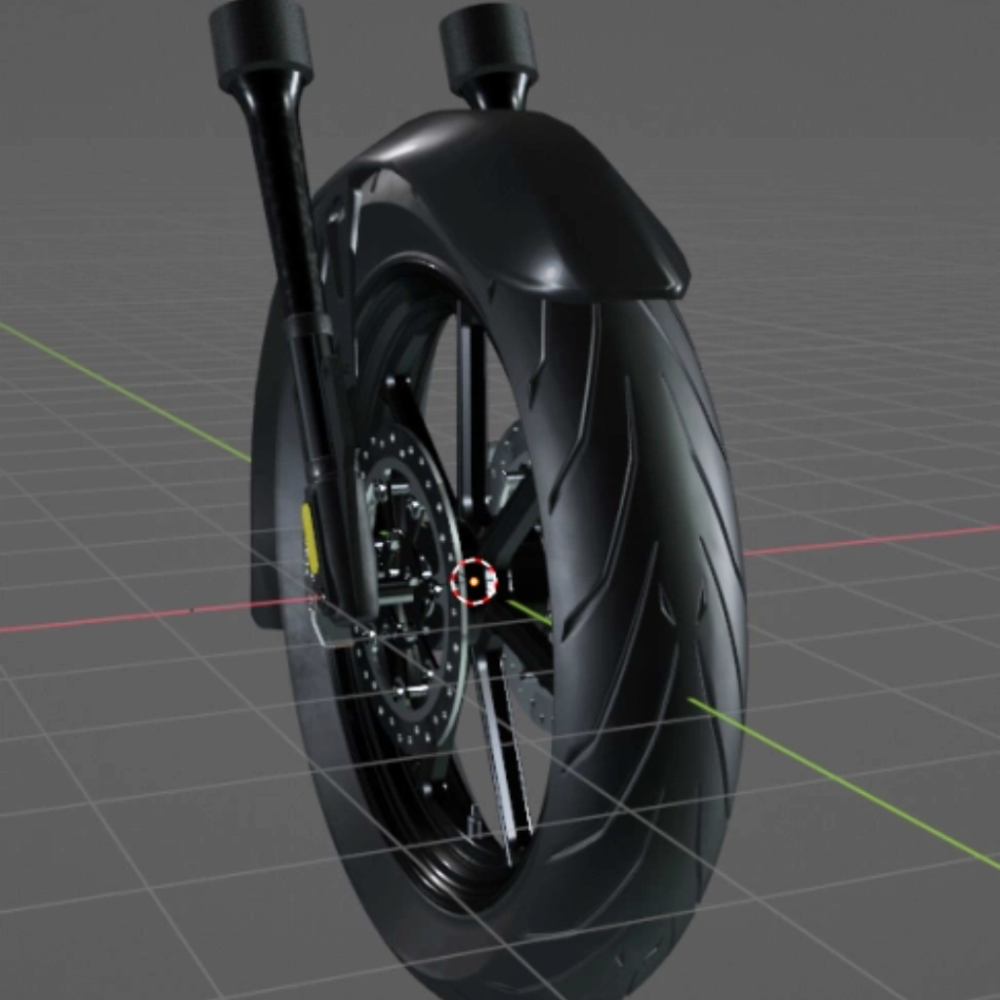
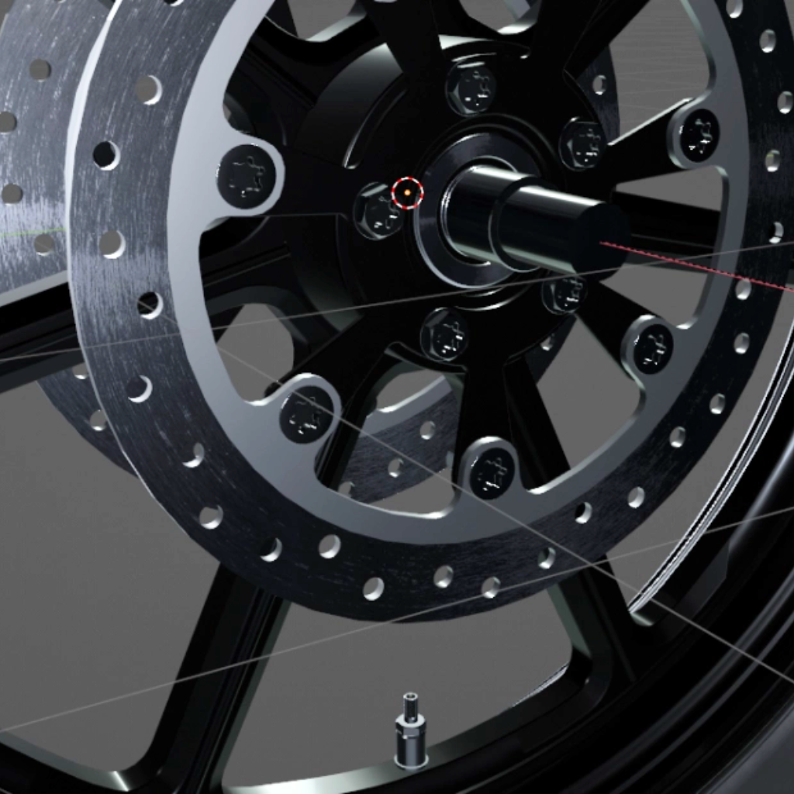
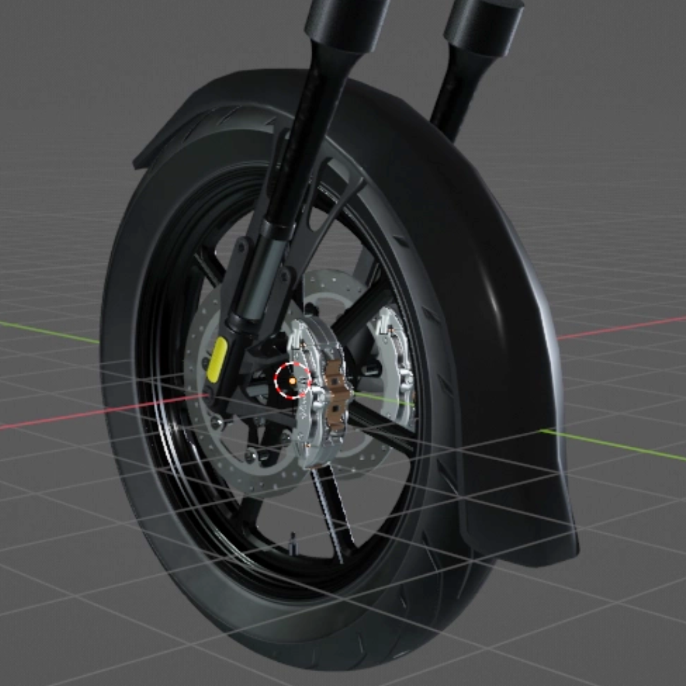
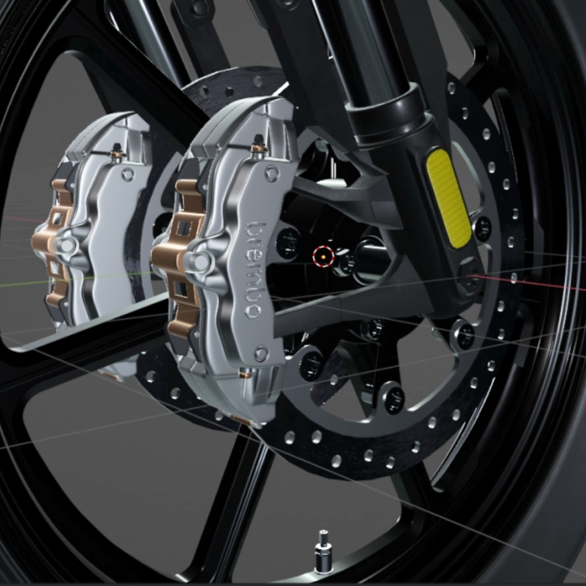
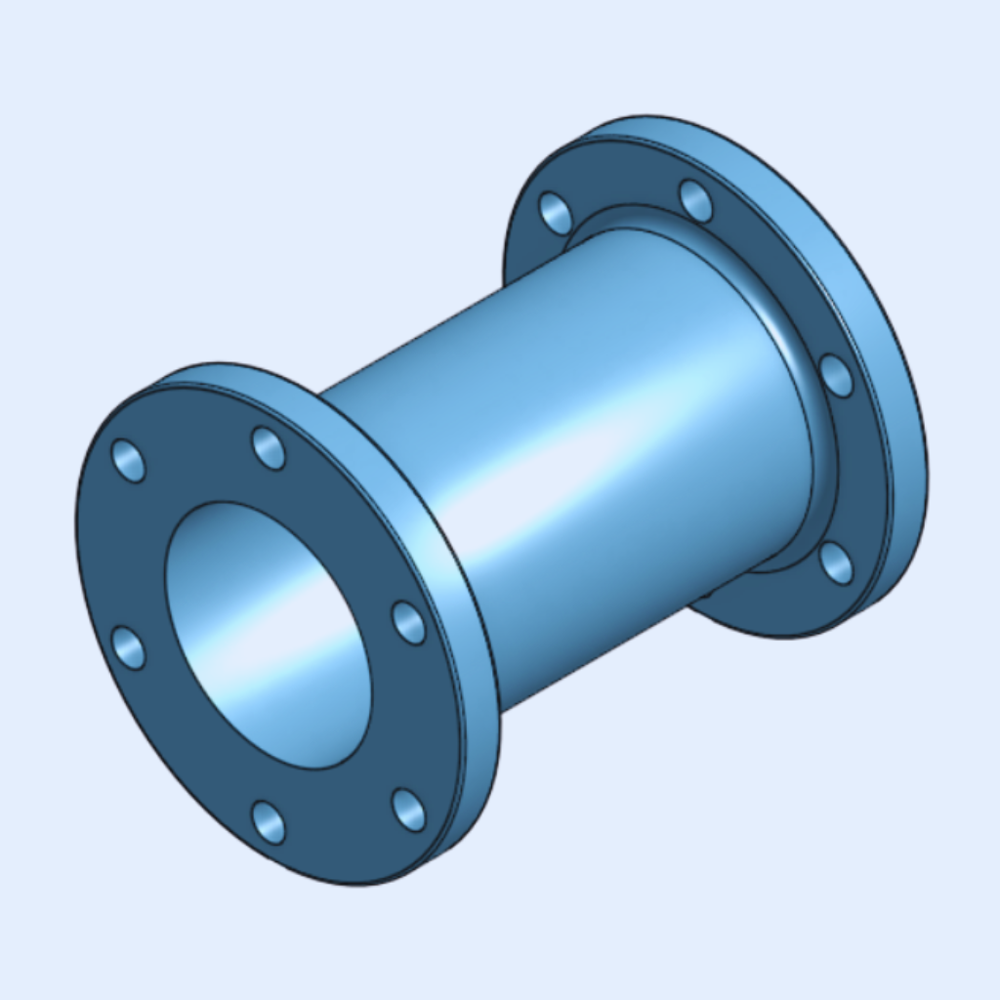
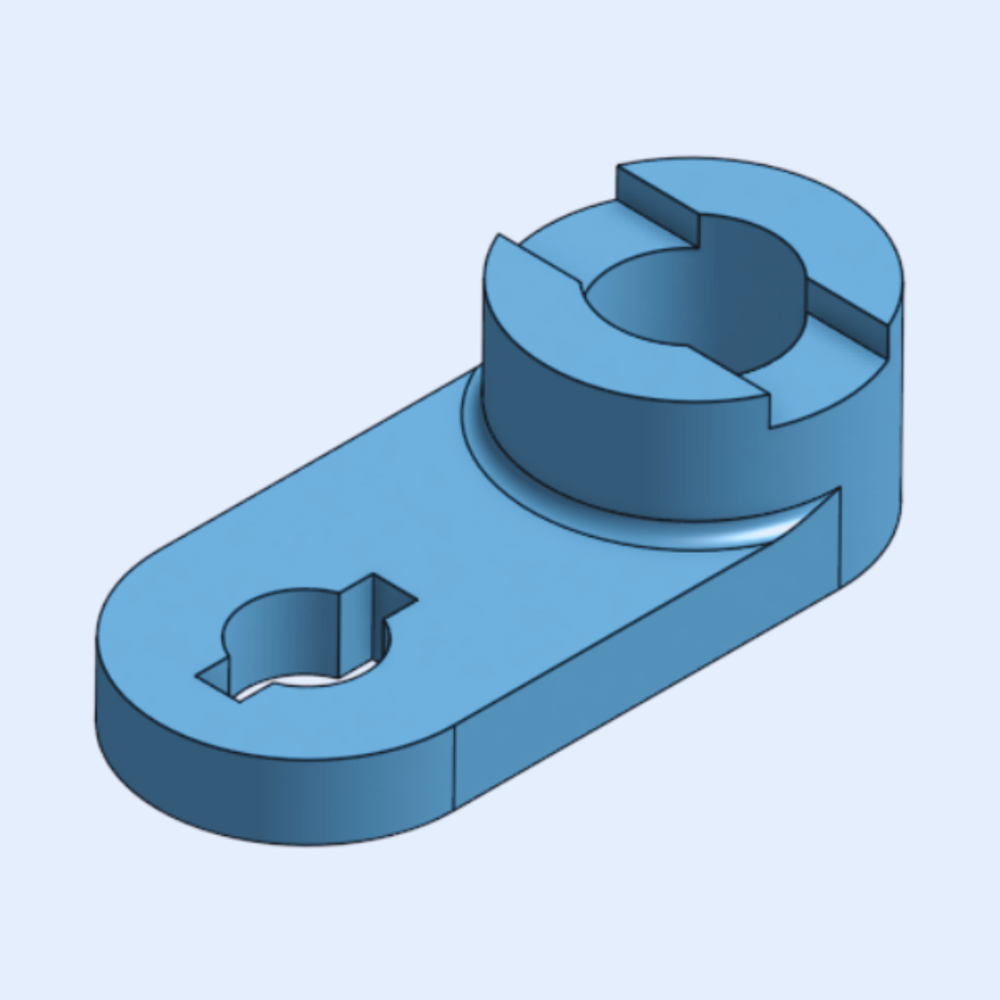

3D Modeling Projects
Zero Turn Lawn Mower
Fully detailed zero-turn mechanical assembly modeled with precise scaling, structural alignment, and component relationships.


Motorcycle Front-End Assembly (Indian Challenger 2024)
Modeled a high-detail front-end assembly of a 2024 Indian Challenger, featuring accurate wheel geometry, dual-disc braking components, and fully constrained fork structures.




Planetary Gear
Created a planetary gear system emphasizing proportional symmetry, smooth gear engagement, and structural balance.


Tensegrity Table
Designed a structurally balanced model applying principles of tension and compression.

Butterfly Valve Body
Modeled a functional butterfly valve body with precise dimensional constraints and component alignment.

CO₂ Powered Model Car
Designed and optimized a lightweight race car and produced a functional 3D printed prototype.


Double Bearing Assembly
Modeled a dual-bearing assembly to support rotational motion with improved load distribution and alignment accuracy, ensuring smooth operation and structural stability.


Connecting Rod
Designed and modeled a lightweight connecting rod using Aluminum 7075, optimized for strength and durability while maintaining a final weight of 219.013 grams.

Flange Yoke
Modeled a flange yoke with accurate geometric constraints, ensuring proper alignment, symmetry, and realistic mechanical proportions.

Double-Flanged Pipe Spool
Created a double-flanged pipe segment featuring accurate flange spacing, symmetric hole placement, and clean mechanical detailing.

Shaft Support Bracket
Modeled a shaft support bracket featuring a slotted mounting base and a precisely constrained cylindrical clamp.
